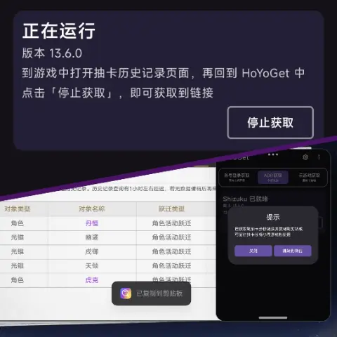
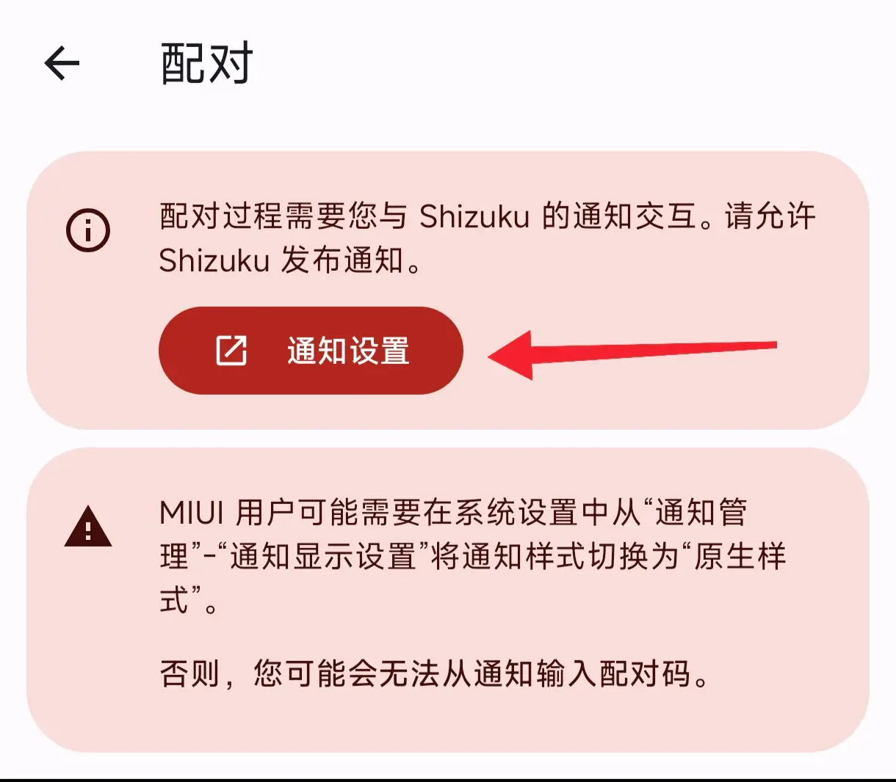

HoYoGet 到底值不值得折腾：一个原神玩家的时间账
HoYoGet 是免费工具，但它要求你配置 Shizuku、ADB、处理国产系统的各种限制——这篇把时间成本按三类使用强度算清楚，帮你三秒决定要不要上手。
它到底值不值得折腾？
这是我蹲完提瓦特小助手的排行榜之后反复问自己的问题。HoYoGet 的官网上写得很清楚，它不是那种一刀下去见分晓的付费软件——它免费，代码开源，文档写得比大多数同类工具都认真，但它要你花在配置上的时间，是实打实的"隐形付费"。今天就把这笔账摊开算。
定价拆解：免费，但不是零成本
HoYoGet 本身完全免费——没有内购、没有广告、没有高级版解锁。从它的官方下载拿下来就能用，功能上不做任何阉割。
但"免费"这两个字背后藏着真正的门槛：获取抽卡链接的四种方式，对不同用户的友好度天差地别。
最简单的一条路是账号登录获取：填米游社账号密码，登录，复制链接——三步搞定，零配置。但这条路有个硬伤，官方对账号登录获取做了频率限制，短时间内反复拉取会触发风控。
第二条路是云游戏获取：打开 HoYoGet 里的云·原神或云·星穹铁道入口，登录一次米哈游账号，进游戏打开抽卡历史页面就能取到链接。比账号登录稍微多一步排队等待，但胜在不走账号 API，被风控的概率低。
第三条路是 ADB + Shizuku——这是 HoYoGet 最硬核也最稳定的方式：手机上装 Shizuku，电脑上跑 adb 无线配对，授权之后 HoYoGet 就能直接从游戏日志里抓抽卡链接，完全不走网络请求，不怕风控、不限频率。但这条路的配置成本……看看HoYoGet文档那张厂商适配表你就懂了：

| 系统 | 你要做的事 |
|---|---|
| MIUI | 改通知样式、开 USB 调试（安全设置）、别用手机管家 |
| ColorOS | 关权限监控 |
| Flyme | 关 Flyme 支付保护 |
| EMUI | 开"仅充电模式下允许 ADB 调试" |
| OriginOS | 基本无解，换设备或改走云游戏 |

vivo/iQOO 用户最惨——OriginOS 对游戏日志做了系统级限制，哪怕 Shizuku 配对成功了，HoYoGet 也拿不到链接。官方给出的建议是：换设备，或者改用云游戏获取。
算账：三类用户的时间账
轻度用户：每月看一次抽卡记录
这类人占大多数——偶尔想看看自己这池歪没歪，频率大概一个月一次，或者版本更新完想复盘一下。
免费版够不够？完全够。
走账号登录或者云游戏获取，一次五分钟搞定。不需要 Shizuku，不需要 adb，不需要折腾厂商设置。唯一要注意的是账号登录别太频繁——但你一个月才用一次，这条限制对你不存在。
成本：每月五分钟。 折算成年是一小时。这个量级的时间，我觉得不值得你花一下午去配置 Shizuku。
主力用户：每周查抽卡数据
这类玩家是真正在意抽卡统计的——每池必看，追五星平均出金数，记保底进度，甚至做抽卡记录的长期趋势。频率大概每周一次，或者每两天一次。
免费版够用但不稳。
账号登录的频率限制在这个使用强度下开始显现——两天一次很可能触发临时封禁。云游戏获取不受频率限制，但每次要排队进云游戏、切页面，实际操作比账号登录慢一倍。
这时候 Shizuku + ADB 的优势出来了：配对一次之后，每次取链接就是打开 HoYoGet、点按钮、复制——十秒钟搞定，不限频率，不怕风控。
成本对比：
- 不配置 Shizuku：每次 2 分钟 × 52 周 = 每年 104 分钟（1.7 小时），还有被风控的风险
- 花 1 小时配好 Shizuku：每次 10 秒 × 52 周 = 每年 8.7 分钟
- 净节省：每年约 95 分钟，加上零风控的心理安全感
值不值？一小时的配置时间换回来每年少花一个半小时在重复操作上，而且 Shizuku 配好之后基本不用管。我觉得对主力玩家来说，这笔账是正的。
重度用户：每天查，做抽卡分析报告
这类人要么是内容创作者（做抽卡分析视频、写攻略），要么是数据党——不仅查自己的，可能还帮朋友查、做批量分析。频率每天一次甚至更多。
Shizuku 是刚需。
账号登录和云游戏获取在这个频率下都不现实——前者触发风控，后者排队时间累加起来就是灾难。ADB + Shizuku 是唯一能稳定支撑高频使用的方式。
成本：
- 花 1 小时配好 Shizuku（vivo/iQOO 用户可能要换设备或改走云游戏）
- 之后每次十秒，不限频率
- 如果你每天查一次，一年能省下来的时间是：假设云游戏每次 5 分钟，Shizuku 每次 10 秒 → 每天省 4 分 50 秒 → 每年省约 29.5 小时
29 小时。这个量级的时间，放在任何一个创作者或数据党身上，都不是个小数。
替代方案：不折腾 HoYoGet 的其他路
如果你看完上面的账觉得"还是不想折腾"，还有几个替代选项：
直接用提瓦特小助手的手动录入。 提瓦特小助手本身支持手动输入抽卡记录——你自己记下每次抽了几发、出了什么，每周手动填一次。好处是零配置、零风控，坏处是费脑子——你得真的记得每一发的结果，而且手动录入本身就是个麻烦事。适合那种"偶尔看看但不想折腾任何工具"的纯佛系玩家。
降低频率。 把每周查一次改成每月查一次，或者干脆只在版本末复盘。这样账号登录的频率限制永远不会触发，也不用花时间配 Shizuku。代价是你放弃了实时的抽卡进度感知——如果你不怎么在意保底跑到哪了，这完全可行。
用其他平台的云游戏。 HoYoGet 还支持 BiliGame 等第三方云游戏平台获取链接——这条路绕开了米哈游自家云游戏的排队限制，但配置起来也需要额外操作，本质上和云游戏获取是同一条路的不同入口。
结论：三秒对号入座
现在回到最初的问题——它到底值不值得折腾？
- 轻度玩家（每月一次）：闭眼装，但别花时间配 Shizuku。 下载下来用账号登录或云游戏获取就够了，五分钟解决问题，剩下的配置是浪费时间。
- 主力玩家（每周一次）：花一小时配好 Shizuku，值。 配对一次，之后一劳永逸。每年省下来的一个半小时加上零风控的安心感，回报比超过 1:10。
- 重度用户（每天一次+）：Shizuku 是刚需。 别犹豫，去配。如果你是 vivo/iQOO 用户，要么换设备要么老老实实走云游戏——没有第三条路。
- vivo/iQOO 用户不管哪类：放弃 ADB 这条路。 官方文档已经把这话说死了，别浪费时间折腾。
还有一点必须提——HoYoGet 取到的抽卡分析链接带着你的身份授权，拿在手里就能分页读你完整的抽卡记录。它的安全性做得还算扎实（数据操作全部在本地或与米哈游服务器之间完成，不上传第三方），但这条链接你粘给谁、用完清不清剪贴板，这是你自己的责任。官方在每个获取方法页面都写了同一句话：
请妥善保管与处理您的抽卡分析链接，向不明身份的人或应用泄露该链接可能导致账号被盗！
这句话不是吓你的——抽卡记录暴露的 UID、角色养成进度、资源投入节奏，正是定向诈骗最爱用的画像信息。
最后，如果你想了解更详细的获取方法和配置步骤，HoYoGet 的文档是我见过同类工具里写得最认真的一份——四种获取方式全部分章节展开，连各国产系统的适配清单都列出来了。HoYoGet 本身也免费开源，GitHub、Gitee、GitCode 三个代码仓库都能拿到全套资料。